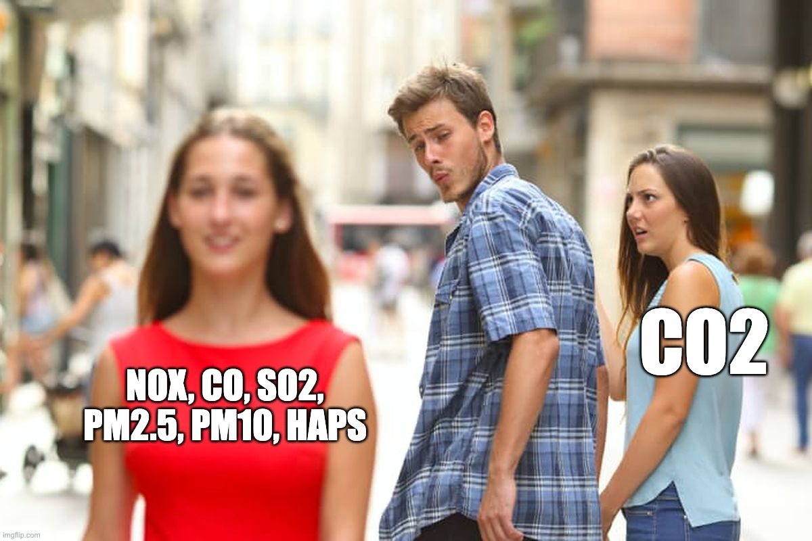

Fact-Checking Deep Green's Emissions Blog Post

LANSING, Mich. — On April 2, 2026, Deep Green Technologies published a blog post titled "Analysis: Deep Green Data Centre project confirmed to reduce overall Lansing emissions." The post cites a "March 1, 2026, Lansing Board of Water & Light response to City Council" as the source for an emissions comparison table.
The claims in the post are false, misleading, or based on a source document that does not exist in any public file. Each uses a named rhetorical technique. Tap the purple badges for definitions.
Claim 1: "Confirmed to reduce overall Lansing emissions"
False Cherry-Picked Baseline
The emissions table compares criteria pollutants (NOx, CO, SO2, PM2.5, PM10, HAPs) from 16 MW of Bloom fuel cells against a 15.3 MMBtu/hr natural gas boiler. The fuel cells do produce less of those six, but the table leaves out carbon dioxide.
Deep Green's own presentation to the City Council (CivicClerk Event 7881, March 23, 2026, slide deck page 109) says fuel cells reduce CO2 by "nearly 50%," which still means roughly half the CO2 of gas combustion. At 16 MW running continuously, that comes to an estimated 95,000 to 110,000 metric tons per year based on Bloom's published heat rates, added to a site that currently produces no CO2.
After fuel cell degradation, the numbers get worse. The Hindenburg Research report (September 2019) found that post-2016 Bloom stacks degraded from 58.3% to 51.0% efficiency within 25 months, on pace to breach rated thresholds within 34 months. At degraded efficiency, Bloom fuel cells emit approximately 835 pounds of CO2 per megawatt-hour based on state utility performance data cited in the same report. A combined-cycle natural gas plant emits roughly 896 per the EPA eGRID database, a difference of less than 8%.
Excluding CO2 from an emissions table for a fossil fuel facility and calling the result a "net reduction" is not a finding anyone should take seriously.
Claim 2: Fuel cells vs. a natural gas boiler as the only alternative
Misleading False Dilemma
The table gives you two options: Bloom fuel cells or a new 15.3 MMBtu/hr gas boiler. The assumption is that without Deep Green, BWL would have to build that boiler for the steam-to-hot-water conversion.
The Ever-Green Energy presentation to the BWL Board (September 9, 2025, Committee of the Whole) described the conversion as a standalone project. No mention of Deep Green, fuel cells, data centers, or a new gas boiler anywhere in the presentation, and the conversion has other heat source options.
Mayor Schor said in his April 1 letter that BWL "recently broke ground" on the conversion. It is going forward with or without Deep Green. If the real alternative is no new facility, the fuel cell emissions are not a reduction but an addition to a site that currently produces nothing.
Claim 3: Source document, "March 1, 2026, BWL response to City Council"
Unverifiable Appeal to Complexity
The emissions table cites a "March 1, 2026, Lansing Board of Water & Light response to City Council." This document does not appear in:
- The March 9, 2026 City Council agenda packet (292 pages, CivicClerk Event 7869, fileId 14752)
- The March 23, 2026 City Council agenda packet (355 pages, CivicClerk Event 7881, fileId 14813)
- The BWL Board of Commissioners March 24, 2026 meeting packet (lbwl.com)
- The BWL newsroom
We ran full-text searches of all three documents for "emission," "fuel cell," "boiler," "NOx," "TPY," and "pollutant." No emissions comparison table or BWL analysis appeared in any of them. The document was either emailed privately to council members and never filed with the Clerk, or handed directly to Deep Green by BWL staff.
The public has no way to check the numbers. The analysis was prepared by BWL, Deep Green's own project partner, and the source document has never been made public.
Claim 4: The fuel cells are presented as an alternative to natural gas
False by omission Motte and Bailey
The table labels one column "16MW Bloom Fuel Cells" and the other "Natural Gas Boiler," as if these run on different fuels. They don't. Bloom solid oxide fuel cells consume natural gas. They reform it electrochemically instead of burning it, which produces fewer criteria pollutants but still burns fossil fuel and still produces CO2.
Neither the table nor the blog post mentions natural gas as the fuel cell's fuel source. This fits a pattern:
- A push poll texted to Lansing residents on the same day (April 2) described the fuel cells as "hydrogen fuel cells." They are not hydrogen fuel cells. 91% of Bloom Energy fuel cells globally run on natural gas.
- Mayor Schor's April 1 letter does not mention natural gas as the fuel source.
- Deep Green's Lansing public information page does not specify the fuel.
If the fuel cells ran on hydrogen, Deep Green would say so. They don't, because they don't.
Claim 5: "$5 million" in savings by avoiding a boiler
Unverified Affirming the Consequent
The blog post says BWL General Manager Dick Peffley told WLNS TV6 the project would save "$5 million" by avoiding a new boiler. No public document, board resolution, or budget line item backs this up. Peffley has repeated the claim at meetings, but the cost comparison behind it has never been published.
The number also depends on the false dilemma above: it only works if the only alternative is a new gas boiler. If the conversion uses existing heat sources, there is nothing to "save" $5 million against.
Claim 6: BWL's analysis treated as independent
Misleading Borrowed Credibility
The blog post presents BWL's emissions data as though it came from a neutral party. BWL is not neutral. At the January 27, 2026 Board of Commissioners meeting (BWL Board packet, March 24, 2026, page 24), Peffley told commissioners:
"DG will purchase the equipment and pay for its fuel and maintenance. But BWL will own and control the equipment."
Under this arrangement, BWL would own 16 MW of fuel cell equipment and carry the asset risk if the cells degrade or need early replacement. An emissions analysis from BWL about a project BWL has a financial stake in is not independent verification.
Claim 7: "PM2.5: Negligible. PM10: Negligible."
Misleading Appeal to Complexity
"Negligible" is not a number. The boiler column gives 0.5 TPY for each, while the fuel cell column substitutes a word for a measurement. For a facility running 24 hours a day next to the Grand River, homes, and public spaces, particulate matter should be quantified.
The table also lists HAPs (hazardous air pollutants) at 0.0128 TPY for the fuel cells, a new HAP source at a site that currently produces none. At Bloom's Newark, Delaware facility, the EPA designated Bloom a Large Quantity Generator of hazardous waste including benzene (D018), chromium (D007), and lead (D008), and fined them $1.16 million for 258 manifest violations (EPA consent agreement, December 2020). Deep Green has not said what hazardous waste protocols would apply in Lansing.
Bonus: Deep Green's own website says "AI and HPC"
Moving the Goalposts
On April 1, Mayor Schor wrote: "This is for a data center for cloud storage only, not AI."
On April 2, Deep Green published the emissions blog post. Its og:description meta tag, the text that appears when the page is shared on social media, reads:
"We build and operate modular, high density data centres for AI and HPC, ultra-efficient, waterless, and designed to reuse heat for everyone's benefit."
The blog post references AI and HPC in both its text and metadata, and Deep Green's global website describes their business as artificial intelligence and high-performance computing. Someone is not being straightforward: Deep Green's website says AI and HPC while the mayor says cloud storage only. Both cannot be true, and Lansing residents have no way to know which description matches what would actually operate on their public land.
The Timing
Gish Gallop
This blog post went up April 2, 2026. The same day, Lansing residents started getting push poll texts calling the fuel cells "hydrogen fuel cells" and claiming "$2 million annually" in tax revenue, a number that appears in no public document. The day before, Mayor Schor published a support letter and a Soft Edge robotext urged residents to call council.
That is four new information sources in 48 hours, each requiring its own fact-check, and none holding up against the public record.
What an honest analysis would look like
It would include CO2, compare against the actual alternative rather than just the worst one, disclose that the fuel cells run on natural gas, and account for degradation over the 20-year contract. It would be prepared by someone other than the project partner and filed publicly so anyone could check the math.
Deep Green's blog post does not meet any of these standards.
Spot the technique
Every purple badge in this post names a rhetorical technique from the public record of this debate. For the full catalog (25 techniques with real examples, all from the Deep Green case), read Socrates Is Not a Cat: A Citizen's Guide to Logical Fallacies.
If the emissions data is real, why not file it with the City Clerk so anyone can check it?
Sources
Deep Green blog post, "Analysis: Deep Green Data Centre project confirmed to reduce overall Lansing emissions," published April 2, 2026 (deepgreen.energy). March 9, 2026 City Council packet, CivicClerk Event 7869. March 23, 2026 City Council packet, CivicClerk Event 7881. BWL Board of Commissioners March 24, 2026 meeting packet (PDF), including January 27, 2026 Board minutes with Peffley remarks on fuel cell ownership (page 24). Deep Green presentation slides, March 23 packet page 109 (CO2 claim). Ever-Green Energy presentation to BWL Board, September 9, 2025, Committee of the Whole (BWL archived packet). Hindenburg Research, "Bloom Energy", September 2019 (fuel cell degradation, efficiency data, ~835 lbs CO2/MWh from state utility performance records). EPA eGRID (combined-cycle natural gas plant emissions baseline). EPA consent agreement, December 2020 (Bloom hazardous waste violations, Newark DE); Delaware Business Now reporting, January 2021. NBC Bay Area investigation, Bloom natural gas usage. WLNS, Peffley $5M boiler claim. Mayor Schor letter, April 1, 2026 (lansingmi.gov). Deep Green og:description meta tag, retrieved April 2, 2026.